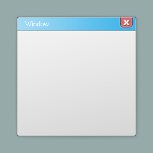
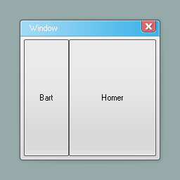
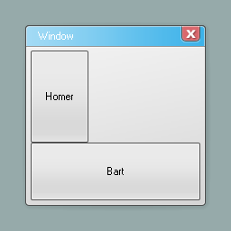
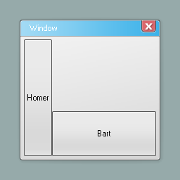
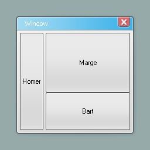

Docking
- Note
- These notes are from Garry's blog.
I always feel like I learn better by looking at images rather than text. So here goes (this is in GWEN but it"s the same principle in GMod).
New Window

New Button called Bart

Dock Bart "Left"

New Button Homer - Dock "Fill"

Dock Bart "Bottom"

Dock Homer "Left"

Send Homer To The Back

Reduce Homer's Width

Add Marge - Dock "Fill"

Change Homer's Margin (0,0,4,0) (l,u,r,d)

Create Button ":D" on Homer, Dock "Bottom"

Change :D margin to (4,4,4,4)

As you can see it makes laying out your controls set and forget. Previously you'd be setting the layout in something like PerformLayout - manually working out pixels, subtracting from the width of the parent. It gets messy.
Docking isn't appropriate for everything but it works for a lot of stuff. It also has the advantage that it automatically scales when stuff gets resized.